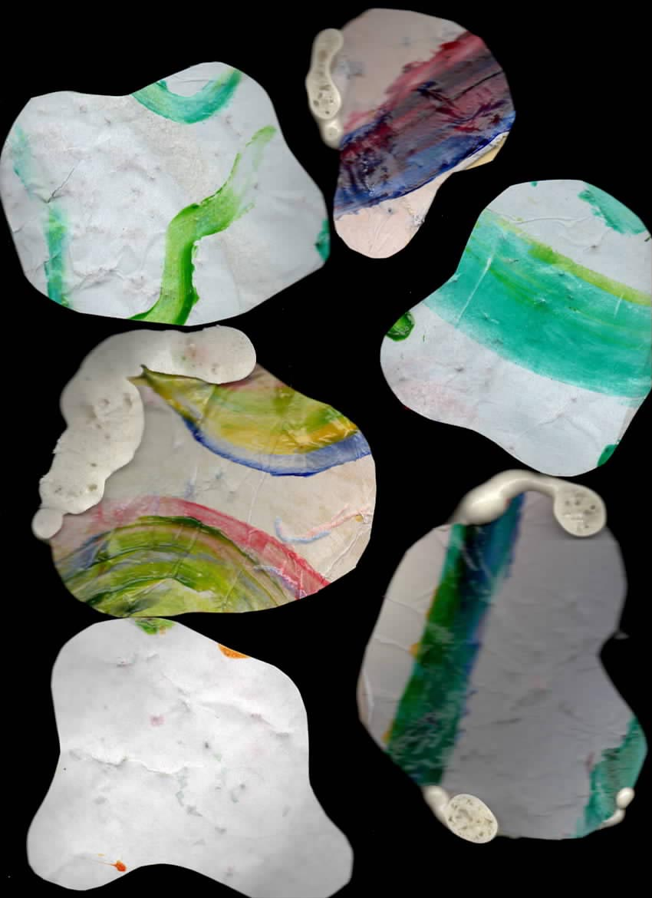
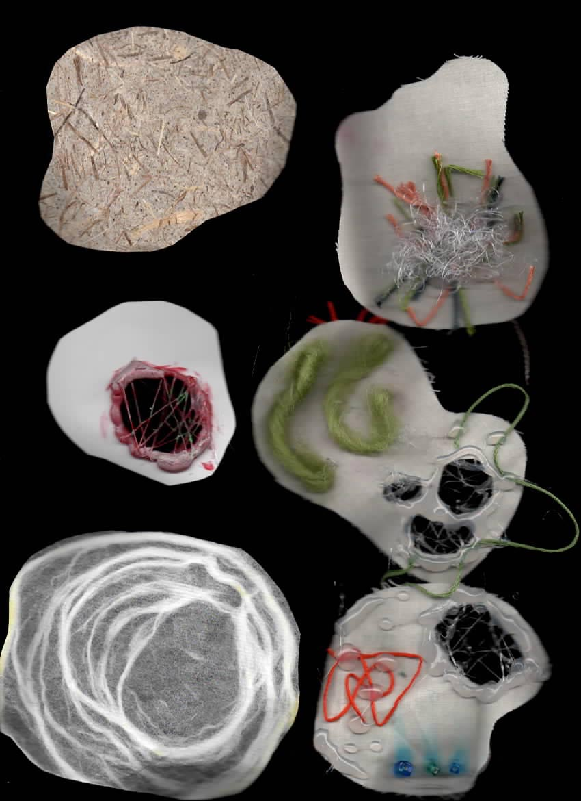
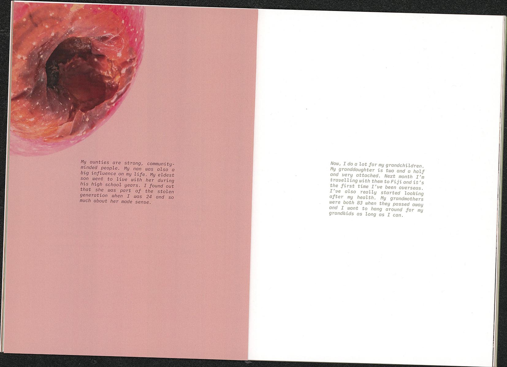
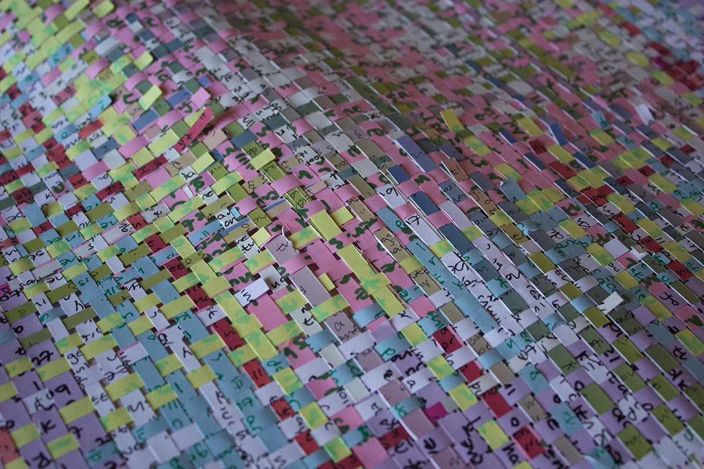
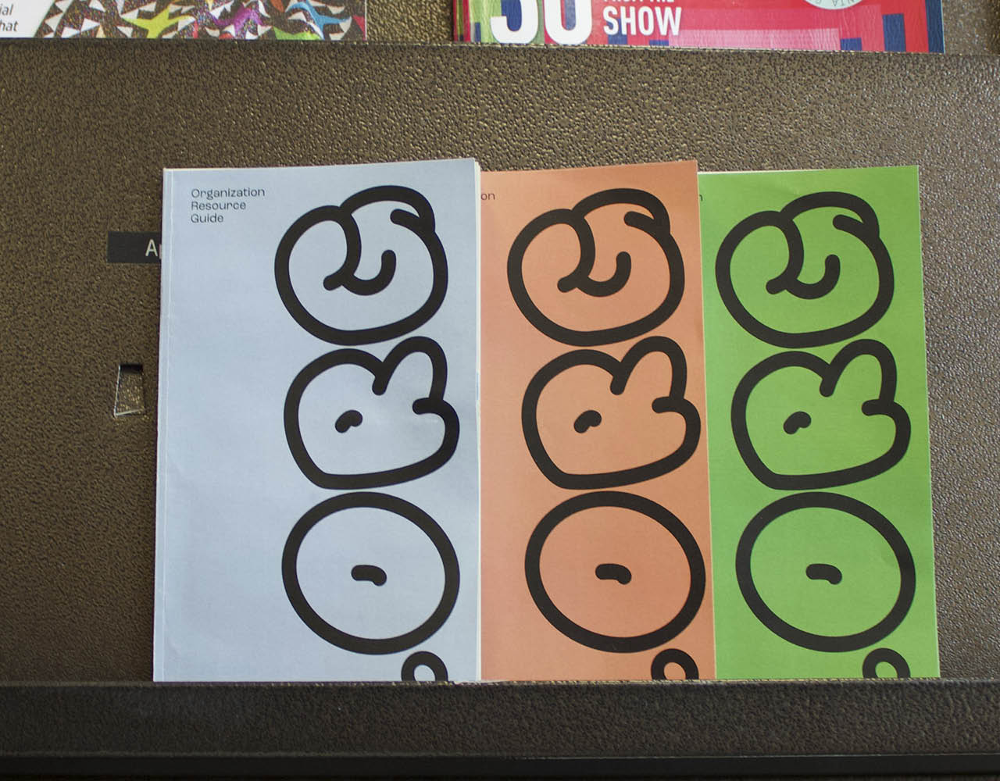
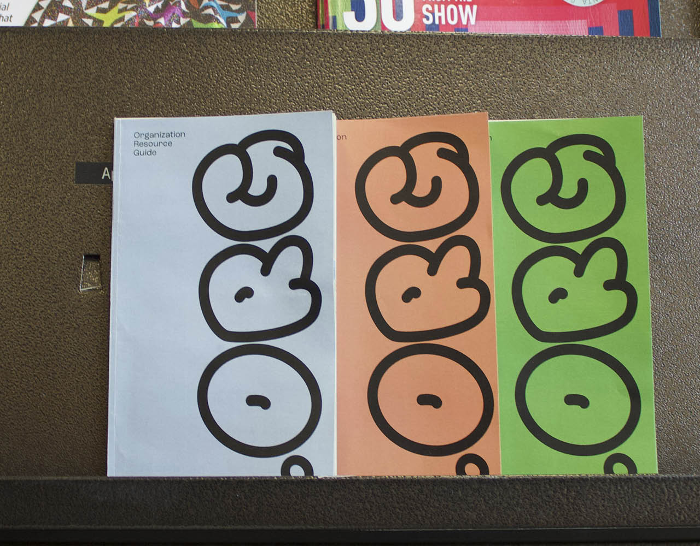

Reagan Young
Designer
reaganyoungdesign@gmail.com
welcome! my website is currently under construction, but please peruse this temporary digital archive.
by number
an ongoing project that explores the subjectivity of color using the structure of a color-by-number. users are asked to answer questions by coloring, and then apply the chosen hues to the corresponding illustration.
what do pages look like in a world imperceptable to us?
what languages do its creatures speak?


open house exhibition identity and social media
another ongoing project thinking about the transitional space of a home being moved out of, specifically how cardboard boxes and real estate ephemera can represent that. a cardboard box cycling through the stages of being broken down and built back up forms the shape of a house, creating the exhibition logo.
objects and methods poster for rosen eveleigh
organization resource guide (.org)
.org was a collaborative project with the goal of making organization research more accessible and joyous.
women and aging
this book recontextualizes the article women and aging written by Neha Kale and Isabella Moore by pairing it with imagery of rotten fruit to satiricalize the objectification of women and comment on the societal views of aging women as inconsumable.


objects and methods poster for somnath bhatt
thinking about abstracting the geometry of a letter and reimagining pixels to create a new written language.
diary entry
with diary entry the process of cutting and weaving adds to the catharsis of journaling, and the ever-growing piece became an archival artifact tangling together a 3 month time period.


objects and methods poster for neta bomani
using paper weaving and its visual similarities to pixels as a poster.
poster for lauren thorson's lecture series
inventing a dot-to-dot to generate unexpected imagery
"design equitable genitals" linocut
the end for now :)


 
